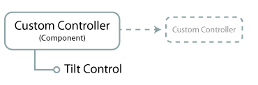
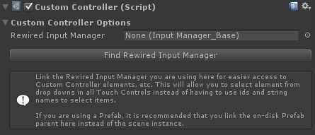
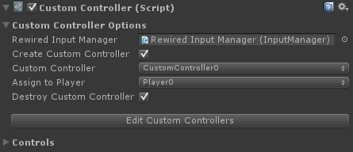
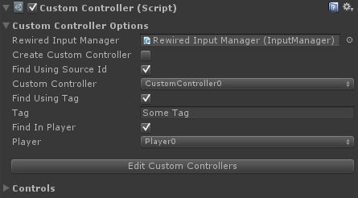
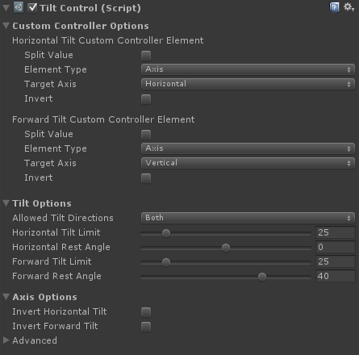

Component Controls
General Information
Controllers
Controls
Other Controls
General Information
Requirements
- Understanding of Rewired and Controller Maps
- Understanding of Custom Controllers
Overview
Component controls are MonoBehaviour based controls that can be configured using the Unity inspector. Touch controls and tilt controls are two examples of component controls. Component controls are most commonly used to provide input values to a Custom Controller which has been configured beforehand in the Rewired Editor.
Component controls consist of two component types:
- Component Controller - Manages a set of controls.
- Component Control - Individual buttons, joysticks, touch pads, tilt control, etc.
Each Component Control must always be the child of a Component Controller in the Unity scene Hierarchy. The Component Controller is responsible for collecting input data from its individual child controls, and in most cases, sending that data to a Custom Controller. The hierarchy of a an example Component Controller with its child controls would look like this:

In the example above, the Touch Controller component points to a Rewired.CustomController class object which will receive the data from the touch joystick, the two touch buttons, and a tilt control. Each control will get the user input and send that data back to the Touch Controller component, which will feed it into the target Custom Controller elements pointed to in the inspector. The input will be piped into the Rewired Player-Action system and the Player who is assigned the Custom Controller will receive the input. The game-side code for getting input remains unchanged regardless of whether the input is coming from a physical joystick, keyboard, mouse, touch controller, tilt control, etc.
You will notice the Tilt Control in the list above parented underneath a Touch Controller component. Even though a Tilt Control isn't a touch control, it can still be parented underneath a Touch Controller component and it will work because Touch Controller inherits from Custom Controller component and fulfills all requirements of the Tilt Control. You could just as easily parent the Tilt Control underneath a Custom Controller component instead, for example, if you aren't using any touch controls.

For Touch Controls, however, the Touch Controller component must be used instead of the Custom Controller component.
The most common use of Component Controls is on-screen Touch Controls for mobile games. Rewired includes touch controls which you can customize and use directly in your games. See Touch Controls for more information.
Controllers
Custom Controller
The Custom Controller component is responsible for sending user input data received from its child Component Controls into the Rewired.CustomController.
The Custom Controller component is essentially a component wrapper for the Rewired.CustomController class. The Custom Controller component cannot function without an underlying target Rewired.CustomController. This component's inspector allows you to set options which will tell it which Rewired.CustomController to point to.
The first thing you should do is link the Rewired Input Manager you intend to use to the Rewired Input Manager field of the Custom Controller. This is optional, but highly recommended as it allows you to select the Custom Controller and the target elements on that controller by simply selecting them from a drop-down. If you do not link the Rewired Input Manager, you will have to use either string names or id integers to tell the controller and each control which Custom Controller and which elements in which to feed the incoming data.
Click the "Find Rewired Input Manager" button in the inspector to find any enabled Rewired Input Manager in the scene and link it. Otherwise, you can manually link it to the Rewired Input Manager.

There are two ways to determine the target Rewired.CustomController:
- Instantiate a new Custom Controller from a controller defined in the Rewired Input Manager.
- Search through existing Custom Controllers that have already been instantiated.
Instantiating a new Custom Controller:
The Custom Controller component can instantiate a new Rewired.CustomController from an existing controller definition that you have created beforehand in the Rewired Input Manager. This is the easiest way to work with Custom Controllers and is the recommended option.
A new Rewired.CustomController will be instantiated on Awake of the Custom Controller component and optionally destroyed when the Custom Controller component is destroyed. To enable this, check "Create Custom Controller" and "Destroy Custom Controller" in the inspector. Select a Custom Controller from the list or enter its Source Id, then choose a Player to assign it to when it's instantiated.

| Create Custom Controller | If true, a new Custom Controller will be created. Otherwise, an existing Custom Controller will be found using the selector properties. |
| Custom Controller / Source Id | (Custom Controller is shown if the Rewired Input Manager has been linked in the Rewired Input Manager field, otherwise Source Id is shown.) Custom Controller: Source Id: |
| Assign To Player / Assign To Player Id | (Assign To Player is shown if the Rewired Input Manager has been linked in the Rewired Input Manager field, otherwise Assign To Player Id is shown.) Assign To Player: Assign To Player Id: |
| Destroy Custom Controller | If true, the Custom Controller created by this component will be destroyed when this component is destroyed. |
Searching for an existing Custom Controller:
If you have already instiantated a Rewired.CustomController through scripting or have set up Rewired to automatically create a Custom Controller on start by adding it under "Starting Custom Controllers" on the Players page of the Rewired Editor, you can set up the Custom Controller component to find that existing Rewired.CustomController and use it for its target.
If you want to search for an existing Rewired.CustomController, the "Create Custom Controller" field must not be checked:

Additional options will appear in the inspector allowing you to set the search parameters:
| Find Using Source Id | If true, the Custom Controller will be searched for by its source controller id. This can be used with Find in Player and/or Find Using Tag to further refine the search parameters. |
| Custom Controller / Custom Controller Id | (Custom Controller is shown if the Rewired Input Manager has been linked in the Rewired Input Manager field, otherwise Custom Controller Id is shown.) Custom Controller: Custom Controller Id: |
| Find Using Tag | If true, the Custom Controller will be found using the tag specified here. This can be used with Find in Player and/or Find Using Source Id to further refine the search parameters. |
| Tag | The tag on the Custom Controller you wish to use. This is used to find the Custom Controller. |
| Find In Player | If true, the Custom Controller will be searched for in the Player specified in the Player Id field. This can be used with Find Using Source Id and/or Find Using Tag to further refine the search parameters. |
| Player / Player Id | The Player Id of the Player that owns the Custom Controller. |
Controls
Tilt Control
The Tilt Control uses a device's accelerometer and gyro to determine forward and horizontal tilt. The output values are in the -1 to +1 range.
A Custom Controller component or a component that inherits from it must exist on a parent of the control's GameObject.
Inspector Options

| Custom Controller Options | |
| Horizontal Tilt Custom Controller Element | The Custom Controller element that will receive input values from the X axis. |
| Forward Tilt Custom Controller Element | The Custom Controller element that will receive input values from the Y axis. |
| Tilt Options | |
| Allowed Tilt Directions | The tilt directions in which movement is allowed. You can restrict movement to one or both directions. |
| Horizontal Tilt Limit | The maximum horizontal tilt angle in degrees. When the device is tilted to this angle or further in either direction, the axis will return a value of 1/-1. |
| Horizontal Rest Angle | The offset angle from horizontal which will be considered the resting angle. This represents the angle at which the user holds the device without generating tilt. |
| Forward Tilt Limit | The maximum forward tilt angle in degrees. When the device is tilted to this angle or further in either direction, the axis will return a value of 1/-1. |
| Forward Rest Angle | The offset angle from vertical which will be considered the resting angle. This represents the angle at which the user holds the device without generating tilt. A typical value would be around 40 degrees. |
| Axis Options | |
| Invert Horizontal Tilt | Inverts the X axis value. |
| Invert Forward Tilt | Inverts the Y axis value. |
| Advanced | Advanced configuration options for the axes. |